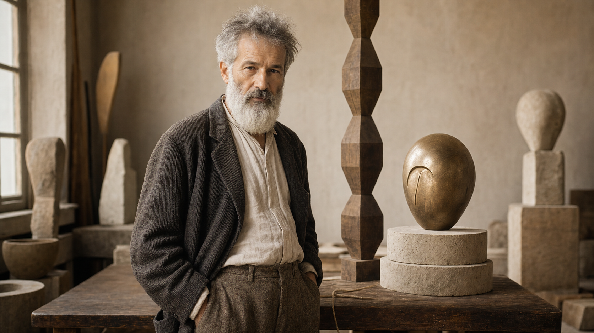

08.Cultura română

La sfârșitul lecției vei ști
Să descriitradiții, sărbători, obiceiuri și elemente importante din cultura română.
Să comparicultura română cu alte culturi, folosind exemple clare și respectuoase.
Să foloseșticomparativul, superlativul și pronumele relative în descrieri culturale.
Să pregăteștio prezentare culturală despre o personalitate, o tradiție sau un obicei.
Vocabular tematic
I. Comprehensiune de lectură
model B1A. Citește textul
Brâncuși și cultura română
Când vorbim despre cultura română, ne gândim adesea la tradiții, sărbători, gastronomie și artă. Cultura nu înseamnă doar trecut, ci și felul în care oamenii păstrează, schimbă și transmit valorile lor. Unele obiceiuri sunt foarte vechi, iar altele sunt mai noi, dar toate arată ceva despre comunitate.
Un exemplu important este Constantin Brâncuși, artistul care a devenit unul dintre cei mai cunoscuți sculptori români în lume. El s-a născut în Oltenia, într-un spațiu în care lemnul, piatra și formele simple erau prezente în viața satului. Mai târziu, la Paris, a creat opere moderne care au schimbat felul în care oamenii priveau sculptura.
Operele lui Brâncuși sunt mai simple decât sculpturile clasice, dar nu sunt mai sărace în sens. Dimpotrivă, ele transmit idei puternice prin forme clare. „Coloana fără sfârșit”, de exemplu, este o lucrare care poate fi văzută ca simbol al urcării, al memoriei și al legăturii dintre pământ și cer.
Cultura română este vizibilă și în sărbători. De Mărțișor, oamenii oferă un mic simbol alb-roșu, care marchează începutul primăverii. De Paște, multe familii vopsesc ouă și pregătesc mâncăruri tradiționale. Comparativ cu alte culturi, tradițiile românești pun mult accent pe familie, ospitalitate și legătura cu natura.
B. Adevărat sau fals
- Cultura înseamnă numai trecut, nu și prezent.
- Constantin Brâncuși este un sculptor român cunoscut în lume.
- Brâncuși a creat numai sculpturi clasice, foarte complicate.
- Mărțișorul marchează începutul primăverii.
- Textul spune că tradițiile românești pun accent pe familie și ospitalitate.
C. Răspunde la întrebări
- Ce elemente intră în cultura română, conform textului?
- Unde s-a născut Constantin Brâncuși?
- Ce a schimbat Brâncuși prin operele sale?
- Ce poate simboliza „Coloana fără sfârșit”?
- Ce fac multe familii de Paște?
D. Găsește în text
- Două domenii ale culturii: și .
- Două materiale sau forme asociate cu Brâncuși: și .
- O sărbătoare românească: .
- Două valori asociate tradițiilor românești: și .
Cheie orientativă
A/F: 1-F, 2-A, 3-F, 4-A, 5-A. C: tradiții, sărbători, gastronomie, artă; în Oltenia; felul în care oamenii priveau sculptura; urcarea, memoria, legătura dintre pământ și cer; vopsesc ouă și pregătesc mâncăruri tradiționale.
II. Gramatică și vocabular
comparativ · pronume relativeA. Teorie: comparativ și superlativ
B. Pronume relative
| Pronume | Exemplu | Utilizare |
|---|---|---|
| care | Brâncuși este artistul care a schimbat sculptura modernă. | subiect |
| pe care | Opera pe care o admir cel mai mult este „Coloana fără sfârșit”. | complement direct |
| unde | Târgu Jiu este orașul unde se află ansamblul sculptural. | loc |
| când | Mărțișorul este momentul când începe primăvara simbolic. | timp |
| ce | Îmi place ce transmite această tradiție. | idee / lucru general |
C. Completează comparațiile
- Brâncuși este unul dintre cei mai artiști români.
- Unele tradiții sunt mai vechi altele.
- Mărțișorul este la fel de important alte simboluri de primăvară.
- Obiceiurile rurale sunt mai puțin vizibile înainte.
- Cea mai tradiție pentru mine este...
D. Alege pronumele relativ potrivit
- Brâncuși este artistul a creat forme moderne simple. (care / unde)
- Tradiția o admir cel mai mult este Mărțișorul. (pe care / când)
- Târgu Jiu este orașul se află „Coloana fără sfârșit”. (unde / care)
- Ziua se oferă mărțișoare este 1 martie. (când / pe care)
- Îmi place transmite această operă. (ce / unde)
E. Unește propozițiile
- Brâncuși este un sculptor. Sculptorul este cunoscut în lume. → Brâncuși este sculptorul care...
- Am văzut o expoziție. Expoziția mi-a plăcut mult. → Expoziția pe care...
- Am vizitat un sat. În sat se păstrează portul popular. → Am vizitat satul unde...
- Există o sărbătoare. Atunci oamenii oferă mărțișoare. → Există o sărbătoare când...
- Mi-a plăcut o idee. Ideea era despre ospitalitate. → Mi-a plăcut ce...
F. Derivare de vocabular
| Cuvânt de bază | Completează propoziția |
|---|---|
| cultură | Brâncuși este un simbol important. |
| tradiție | Mărțișorul este o sărbătoare . |
| a sculpta | lui Brâncuși este modernă și simplă. |
| a ospăta | este o valoare importantă în multe comunități. |
| simbol | Coloana este o operă . |
G. Construiește propoziții
Scrie cinci propoziții despre cultura română sau cultura ta. Folosește: 1) mai... decât, 2) cel mai / cea mai, 3) care, 4) pe care, 5) unde.
Cheie orientativă
C: cunoscuți, decât, ca, decât, importantă/frumoasă. D: care, pe care, unde, când, ce. F: cultural, tradițională, sculptura, ospitalitatea, simbolică.
III. Exprimare scrisă
prezentare culturalăA. Prezentare culturală
Scrie o prezentare de 120-150 de cuvinte despre o tradiție, o sărbătoare, un artist sau un obicei românesc. Include originea, importanța, un exemplu și o comparație cu altă cultură.
B. Brâncuși pe scurt
Scrie un text scurt despre Constantin Brâncuși pentru un coleg străin. Explică cine a fost, de ce este important și ce operă ai recomanda.
C. Comparație culturală
Compară o sărbătoare românească cu o sărbătoare din altă țară. Folosește minimum trei comparative și un pronume relativ.
IV. Ascultare
prezentare audioAscultă textul citit de profesor sau folosește transcrierea pentru exercițiu.
La un curs de cultură română, profesoara prezintă trei simboluri importante: Mărțișorul, ia tradițională și opera lui Constantin Brâncuși. Ea explică faptul că Mărțișorul este un obicei care marchează începutul primăverii, iar ia este o piesă de port popular pe care mulți români o consideră foarte expresivă. Despre Brâncuși spune că este unul dintre cei mai cunoscuți artiști români și că operele lui sunt admirate în muzee din multe țări.
- Profesoara prezintă trei simboluri ale culturii .
- Mărțișorul marchează începutul .
- Ia este o piesă de port .
- Brâncuși este unul dintre cei mai cunoscuți români.
- Operele lui sunt admirate în din multe țări.
Cheie orientativă
române, primăverii, popular, artiști, muzee.
V. Exprimare orală
model examen B1A. Conversație dirijată
Răspunde la întrebări: Ce tradiție românească ți se pare interesantă? Ce știi despre Brâncuși? Ce mâncare tradițională ai recomanda? Ce sărbătoare este importantă în cultura ta?
B. Monolog
Vorbește 2 minute despre un simbol cultural. Include originea, semnificația, unde poate fi văzut, de ce este important și cu ce îl poți compara.
C. Joc de rol
Studentul A este ghid cultural, iar Studentul B este vizitator. Discutați despre o tradiție, un artist, o mâncare și un muzeu recomandat.